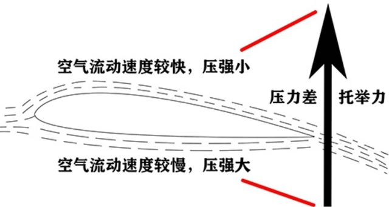

|
|
当等质量的空气同时通过机翼上表面和下表面时，会在机翼上下方形成不同流速，
空气通过机翼上表面时流速大，压强较小，通过下表面时流速较小，压强大，因而此
时飞机会有一个向上的合力，即向上的升力，由于升力的存在，使得飞机可以离开地面，在空中飞行。
|

|
起飞
飞机起飞靠的是与空气的相对运动产生的升力，升力的大小取决于飞机与空气的相对速度，
而不是飞机与地面的相对速度，如果在逆风下起飞，飞机滑跑速度与风速的方向相反，飞机与空气的相对速度等于二者之和。
|
降落
飞机着陆与飞机起飞的情况类似，在着陆的过程中，飞机需要在不断减速的同时保持足够的升力，确
保飞机可以平稳下降，在逆风下着陆，飞机可以在更小速度的情况下，获得所需的升力，从而减小接
地那一刻与地面的相对速度，进而缩短滑行距离。
|
|